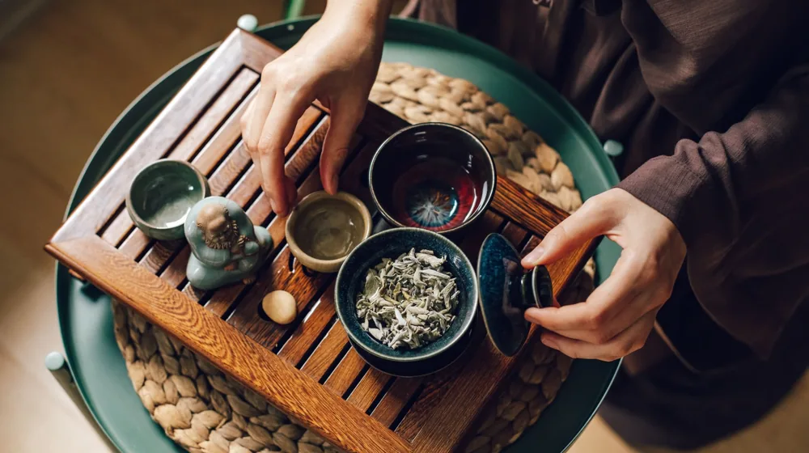

내 몸에 맞는 한방차 재료, 실패 없이 소싱하는 4가지 방법
사진: Heather Brock / Pexels (무료 이미지, 출처 표기)
나에게 맞는 한방차, 안전하게 시작하려면?

최근 웰니스 트렌드와 함께 개인의 체질에 맞춘 한방차를 직접 끓여 마시거나, 브랜드 제품으로 기획하려는 분들이 늘고 있습니다. 하지만 시중의 수많은 약재 중에서 진짜 신뢰할 수 있는 고품질 재료를 찾기란 쉽지 않습니다. 자칫 검증되지 않은 경로로 재료를 구했다가 잔류 농약이나 중금속 우려를 겪을 수도 있습니다. 원산지 확인부터 안전성 검증까지, 건강하고 안전한 한방차 재료를 소싱하는 실전 가이드를 전해드립니다.
1. 내 체질에 맞는 대표 한방차 재료 분류
사상체질(조선 후기 이제마가 창시한 한국 독창의 체질 의학)에 따라 몸에 이로운 약재가 다릅니다. 무작정 몸에 좋다는 약재를 섞기보다는, 본인이나 타깃 고객의 체질적 특성을 먼저 파악하고 그에 맞는 재료를 선택해야 부작용을 줄일 수 있습니다.
2. 안전한 소싱을 위한 필수 인증마크 3가지
차로 우려내어 매일 마시는 약용작물은 농약과 중금속으로부터 안전해야 합니다. 소싱 단계에서 신뢰도를 보장해주는 국가 공인 인증 마크를 확인하는 것만으로도 품질 실패 확률을 크게 낮출 수 있습니다.
- GAP (농산물우수관리제도): 생산부터 수확 후 포장 단계까지 농약, 중금속, 미생물 등 위해요소를 안전하게 관리한 농산물에만 부여되는 마크입니다.
- 지리적표시제 (GI): 특정 농산물의 명성이나 품질이 본질적으로 특정 지역의 지리적 특성에 기인하는 경우, 정부가 품질을 보증하는 제도입니다. (예: 금산 인삼, 영천 돔배기 등)
- 친환경 인증 (유기농·무농약): 합성농약과 화학비료를 전혀 사용하지 않거나 최소화하여 재배했음을 증명하는 인증입니다.
3. 오프라인 시장 vs 온라인 전문 플랫폼 비교
소싱 목적과 수량에 따라 최적의 채널을 선택해야 합니다. 각 유통 채널의 장단점을 명확히 비교해 드립니다.
전통 한약재 시장 (서울 경동시장, 대구 약령시 등)은 직접 눈으로 원물의 상태와 향을 테스트할 수 있고, 대량 구매 시 가격 협상이 유연하다는 장점이 있습니다. 다만 품질이 표준화되어 있지 않아 초보자가 좋은 약재를 감별하기 어렵고 성적서 발급이 까다로울 수 있습니다.
원료 전문 온라인 도매몰 및 산지 직거래는 원산지가 확실하고 농약 잔류 검사를 마친 성적서를 기본으로 제공하여 안전성이 높습니다. 소량 샘플 구매가 쉬워 초기 리스크를 줄일 수 있지만, 전통 시장에 비해 단가가 조금 높게 책정될 수 있습니다.
4. '식용'과 '의약품용' 한방 약재의 차이와 주의사항
한방차 재료를 소싱할 때 법적으로 가장 주의해야 하는 부분이 바로 '식약공용 품목' 구분입니다. 동일한 식물이더라도 법적 용도에 따라 완전히 다르게 분류됩니다.
우리가 일상에서 마시는 차나 가공식품 제조에 사용할 수 있는 원료는 반드시 식품용(식약공용농산물)이어야 합니다. hGMP(우수의약품 제조 및 품질관리 기준) 인증을 거친 '의약품용 한약재'는 한의원이나 한약국 등 의료기관에만 공급될 수 있습니다. 일반 한방차 제품을 만들어 판매할 목적으로 의약품용 약재를 불법 유통하거나 사용하면 약사법 위반으로 처벌받을 수 있으니 소싱 시 제품 규격을 정확히 확인하시기 바랍니다.
5. 실패 없는 한방차 재료 소싱 실전 단계
실제 구매 및 소싱을 진행할 때는 다음의 체계적인 프로세스를 거치는 것을 추천합니다.
- 기획 및 레시피 확정: 타깃 체질과 목적에 맞는 약재 비율을 설정합니다.
- 소싱 대상 선별: GAP 인증 및 무농약 원료 위주로 공급처 후보군을 추립니다.
- 샘플 테스트 진행: 후보 공급처들로부터 소량의 샘플을 받아 직접 우려보고 탄내, 잡미, 수색(물의 색)을 평가합니다.
- 서류 검증: 시험성적서(잔류농약, 중금속 검출 여부)를 요구하여 최종 식품 적합 여부를 교차 검증합니다.
- 초도 물량 수급 및 보관: 약재는 온습도에 민감하여 쉽게 곰팡이가 생기므로 밀폐 보관 시설을 미리 갖춰둡니다.
기후 변화와 농가 사정에 따라 재료의 연간 공급 가격 및 수급 현황은 변동될 수 있습니다. 2026년 기준 원료 공급 단가는 산지 작황에 영향을 많이 받으므로, 계약 체결 전 반드시 생산 농가나 도매 업체를 통해 최신 수급 동향을 재차 확인하시는 것이 안전합니다.
🔗 이 글도 함께 보면 좋아요: 집에서 만드는 떠먹는 막걸리, 이화주 키트 실패 없이 성공하는 법
관련 추천 상품
이 포스팅은 쿠팡 파트너스 활동의 일환으로, 이에 따른 일정액의 수수료를 제공받습니다.